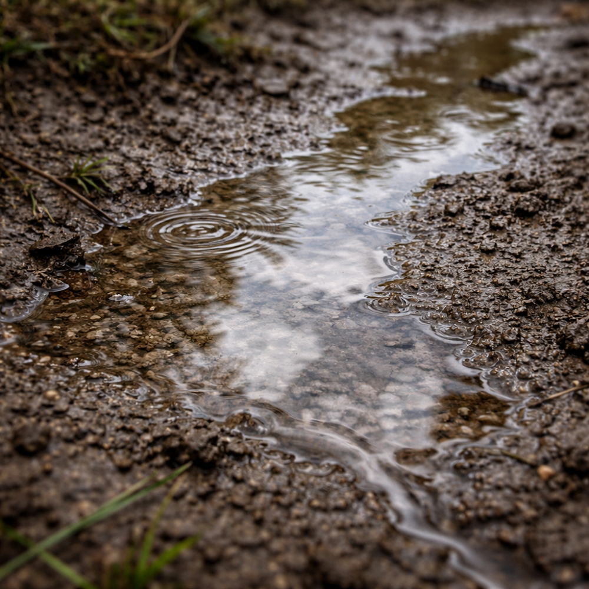

Inicio > Notas críticas > Desde Quisquiza (03 de 20)
Desde Quisquiza (03 de 20)
Suelo
Cuando la tierra se compacta
Esta nota forma parte de una serie escrita desde Quisquiza, en los Andes colombianos, donde territorio y trabajo intelectual ya no están separados. Examina cómo ese cruce transforma mi manera de pensar la memoria, la información y las estructuras que las sostienen. Consulte todas las notas en el índice de esta sección.
Cuando llega Semana Santa, comienza la temporada de lluvias en los Andes: el jallu pacha en aimara, el paray tiempu en quechua.
Y con ella, la temporada de siembra.
En todos los Andes. Incluida Quisquiza.
"El maíz y los frijoles toca sembrarlos en menguante, sumercé", me dicen los campesinos desde hace un mes. En mi lugar de nacimiento, es con la luna creciente. Entiendo que todo tiene su razón de ser, pero es curioso ver las diferencias...
Pero no estoy seguro de poder sembrar nada este año. No por la luna. Por la tierra.
El suelo está degradado. Y cuando lo está —por años y años de vacas, por ejemplo, como en mi parcela— se nota.
Está... compactado. El agua parece escurrirse en lugar de penetrar. La materia orgánica se reduce drásticamente. Las raíces dudan en la superficie y, por supuesto, se rinden. La diversidad se reduce: solo un puñado de plantas y animales pueden adaptarse a ese tipo de estructura.
Si lo pisan después de la lluvia, no cede, se los juro. Se resiste.
(Además, mancha las botas pantaneras de una forma muy particular. Supongo que la arcilla no olvida).
En algunas zonas cerca de mi casa, puedo clavar una taqlla —una antigua herramienta indígena de madera— o una pala —una vieja... bueno, ya saben a qué me refiero— en la tierra y sentir el momento exacto en el que se detiene. Solo unos centímetros bajo la superficie.
Es una capa delgada, densa y silenciosa, que resiste toda penetración. Por encima, las cosas lo intentan. Por debajo, nada se mueve.
La restauración comienza bajo la superficie. Antes de plantar algo ambicioso, la estructura tiene que cambiar. Hablo de aireación, paciencia, aportes orgánicos, paciencia, plantas con raíces pivotantes, paciencia, tiempo, paciencia.
Huelga decir que no se le puede exigir complejidad a un sustrato que se ha simplificado tantísimo.
Trabajar con suelos dañados pone de manifiesto algo evidente: la extracción deja huellas que persisten mucho después de que cese la actividad extractiva. La compactación no es dramática. No se anuncia. Se acumula silenciosamente —paso a paso, temporada tras temporada— hasta que el movimiento se dificulta y, finalmente, se vuelve imposible.
Los sistemas construidos sobre cimientos agotados se comportan de forma similar. Desde arriba, desde fuera, pueden parecer intactos. Incluso, por un rato, pueden parecer productivos. Pero bajo esa superficie, la circulación se encuentra restringida. Nada entra. Nada se ancla correctamente.
La recuperación es lenta porque comienza donde casi nada es visible. La capa base debe reconstruirse antes de que cualquier otra cosa pueda estabilizarse.
(Añadir materia orgánica. Esperar. Observar. Repetir. Y así. No hay atajos. Lo sé. Ya lo intenté).
Tanto los archivistas como los bibliotecarios conocemos bien este patrón.
Los esquemas de metadatos, las tradiciones más arraigadas en la catalogación, los mandatos institucionales, las lógicas de financiación: todo esto conforma el sustrato de nuestro trabajo. Se acumula durante décadas. Estabiliza la práctica.
También se compacta.
Y bajo presión —estandarización, eficiencia, escala— se endurece. Comienza a resistirse a lo que no encaja. Las nuevas categorías no logran integrarse. El conocimiento marginal permanece en la superficie, incapaz de echar raíces. La diversidad se convierte en una vaina decorativa más que una condición estructural.
Ninguna herramienta ni capa digital novedosa es capaz de cambiar eso. Sí, las interfaces mejoran. El acceso se amplía. La superficie luce mejor. Pero por debajo sigue estando la misma densidad.
Trabajar aquí arriba, en la montaña, revela algo difícil de ignorar: si la tierra no respira, nada más importa.
La tarea no es plantar más. Es abrir el suelo, romper esa rigidez, y dejar que la tierra reviva. Solo entonces puede que algo, por pequeño que sea, tenga una mínima chance de perdurar.